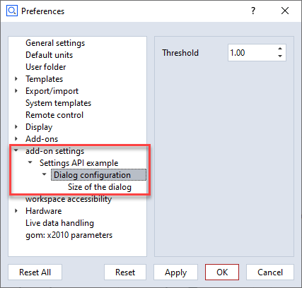

ZEISS INSPECT Python API documentation
Welcome to the ZEISS INSPECT Python API documentation. Here you can find a detailed documentation of a subset of the Add-on programming specification. Please bear in mind, that recording commands with the script editor can be used to add new functions to your script.
gom.api.imaging
Image point/pixel related functions
Image related functions can be used to query images from the measurements of a project. This is not done directly, but via an ‘image acquisition’ object which acts as a proxy between the image storing data structure and the functions which can be used to process the image data.
Terminology:
‘point’: 3D coordinate in the project.
‘pixel’: 2D coordinate in an image.
gom.api.imaging.compute_epipolar_line
- gom.api.imaging.compute_epipolar_line (source: object, traces: [], max_distance: float): []
Compute epipolar line coordinates
- API version:
1
- Parameters:
source (object) – Handle of the image acquisition the epipolar line should be found in.
traces ([]) – List of pairs where each entry describes a pixel image coordinate plus the image acquisition object which should be used to compute the matching point. The image acquisition object here is the “other” acquisition providing the pixels used to find the matching epipolar lines in the
sourcesobject.max_distance (float) – Maximum search distance in mm.
- Returns:
List of matching points
- Return type:
[]
This function computes the parametrics of an epipolar line from pixels projected into images.
Example
stage = gom.app.project.stages['Stage 1']
point = gom.app.project.actual_elements['Point 1'].coordinate
left = gom.api.project.get_image_acquisition (measurement, 'left camera', [stage.index])[0]
right = gom.api.project.get_image_acquisition (measurement, 'right camera', [stage.index])[0]
l = gom.api.imaging.compute_epipolar_line (left, [(gom.Vec2d (1617, 819), right)], 10.0)
print (l)
[[gom.Vec2d (4.752311764226988, 813.7915394509045), gom.Vec2d (10.749371580282741, 813.748887458453), gom.Vec2d
(16.73347976996274, 813.706352662515), ...]]
gom.api.imaging.compute_pixels_from_point
- gom.api.imaging.compute_pixels_from_point(point_and_image_acquisitions: [tuple]): [object]
Compute pixel coordinates from point coordinates
- API version:
1
- Parameters:
point_and_image_acquisitions ([tuple]) – List of (point, acquisition) tuples
- Returns:
List of matching points
- Return type:
[object]
This function is used to compute the location of a 3d point in a 2d image. This is a photogrammetric operation which will return a precise result. The input parameter is a list of tupels where each tuple consists of a 3d point and and acquisition object. The acquisition object is then used to compute the location of the 3d point in the referenced image. This might lead to multiple pixels as a result, so the return value is again a list containing 0 to n entries of pixel matches.
Example
measurement = gom.app.project.measurement_series['Deformation series'].measurements['D1']
stage = gom.app.project.stages['Stage 1']
point = gom.app.project.actual_elements['Point 1'].coordinate
left = gom.api.project.get_image_acquisition (measurement, 'left camera', [stage.index])[0]
right = gom.api.project.get_image_acquisition (measurement, 'right camera', [stage.index])[0]
p = gom.api.imaging.compute_pixels_from_point ([(point, left), (point, right)])
print (p)
[gom.Vec2d (1031.582008690226, 1232.4155555222544), gom.Vec2d (1139.886626169376, 1217.975608783256)]
gom.api.imaging.compute_point_from_pixels
- gom.api.imaging.compute_point_from_pixels(pixel_and_image_acquisitions: [list], use_calibration: bool): [list]
Compute 3d point coordinates from pixels in images
- API version:
1
- Parameters:
pixel_and_image_acquisitions ([list]) – List of (pixel, acquisition) tuples
use_calibration (bool) – If set, the information from the calibration is used to compute the point. Project must provide a calibration for that case.
- Returns:
List of matching pixels and residuums
- Return type:
[list]
This function is used to compute 3d points matching to 2d points in a set of images. The input parameter is a list containing a list of tuples where each tuple consists of a 2d pixel and the matching acquisition object. The acquisition object is then used to compute the location of the 3d point from the pixels in the referenced images. Usually at least two tuples with matching pixels from different images are needed to compute a 3d point. An exception are projects with 2d deformation measurement series. Only there it is sufficient to pass one tuple per point to the function.
The user has to make sure that the pixels from different tuples are matching, which means they correspond to the same location on the specimen. You can use the function gom.api.imaging.compute_epipolar_line() as a helper.
The returned value is a list of (point, residuum) where each entry is the result of intersecting rays cast from the camera positions through the given pixels. The pixel coordinate system center is located in the upper left corner.
Example
measurement = gom.app.project.measurement_series['Deformation 1'].measurements['D1']
stage = gom.app.project.stages[0]
img_left = gom.api.project.get_image_acquisition (measurement, 'left camera', [stage.index])[0]
img_right = gom.api.project.get_image_acquisition (measurement, 'right camera', [stage.index])[0]
pixel_pair_0 = [(gom.Vec2d(1587.74, 793.76), img_left), (gom.Vec2d(2040.22, 789.53), img_right)]
pixel_pair_1 = [(gom.Vec2d(1617.47, 819.67), img_left), (gom.Vec2d(2069.42, 804.69), img_right)]
tuples = [pixel_pair_0, pixel_pair_1]
points = gom.api.imaging.compute_point_from_pixels(tuples, False)
print (points)
[[gom.Vec3d (-702.53, 1690.84, -22.37), 0.121], [gom.Vec3d (-638.25, 1627.62, -27.13), 0.137]]
gom.api.project
Access to project relevant structures
This module contains functions for accessing project relevant data
gom.api.project.create_progress_information
- gom.api.project.create_progress_information (): object
Retrieve a progress information object which can be used to query/control progress status information
- API version:
1
- Returns:
Progress information object
- Return type:
object
This function returns an internal object which can be used to query/control the progress status widget of the main application window. It can be used to display progress information of long running processes.
gom.api.project.get_image_acquisition
- gom.api.project.get_image_acquisition (measurement: object, camera: str, stage: int): object
Generate an of image acquisition object which can be used to query images from the application
- API version:
1
- Parameters:
measurement (object) – Measurement the image is to be queried from.
camera (str) – Identifier for the camera which contributed to the measurement. See above for valid values.
stage (int) – Id of the stage for which the image acquisition object will access.
- Returns:
Image acquisition object which can be used to fetch the images.
- Return type:
object
This function returns an image acquisition object, which in turn can then be used to query the application for various image variants.
Valid valid for the camera parameter are:
left camera: Left camera in a two camera system or the only existing camera in a single camera systemright camera: Right camera in a two camera systemphotogrammetry: Photogrammetry (TRITOP) camera
Example
measurement = gom.app.project.measurement_series['Deformation series'].measurements['D1']
stage = gom.app.project.stages['Stage 1']
left = gom.api.project.get_image_acquisition (measurement, 'left camera', [stage.index])[0]
right = gom.api.project.get_image_acquisition (measurement, 'right camera', [stage.index])[0]
gom.api.project.get_image_acquisitions
- gom.api.project.get_image_acquisitions (measurement_list: object, camera: str, stage: int): object
Generate a list of image acquisition objects which can be used to query images from the application
- API version:
1
- Parameters:
measurement – Measurement the image is to be queried from.
camera (str) – Identifier for the camera which contributed to the measurement. See above for valid values.
stage (int) – Id of the stage for which the image acquisition object will access.
- Returns:
Image acquisition object which can be used to fetch the images.
- Return type:
object
This function returns a list of image acquisition objects, which in turn can then be used to query the application for various image variants.
Valid valid for the camera parameter are:
left camera: Left camera in a two camera system or the only existing camera in a single camera systemright camera: Right camera in a two camera systemphotogrammetry: Photogrammetry (TRITOP) camera
Example
measurements = list (gom.app.project.measurement_series['Deformation series'].measurements)
stage = gom.app.project.stages['Stage 1']
point = gom.app.project.actual_elements['Point 1'].coordinate
all_left_images = gom.api.project.get_image_acquisitions (measurements, 'left camera', [stage.index])
all_right_images = gom.api.project.get_image_acquisitions (measurements, 'right camera', [stage.index])
gom.api.addons
API for accessing the add-ons currently installed in the running software instance
Important
Under development, not released yet !
This API enables access to the installed add-ons. Information about these add-ons can be queried, add-on files and resources can be read and if the calling instance is a member of one specific add-on, this specific add-on can be modified on-the-fly and during software update processes.
gom.api.addons.AddOn.exists
- gom.api.addons.AddOn.exists (path: str): boolean
Check if the given file exists in an add-on
- API version:
1
- Parameters:
path (str) – File path as retrieved by ‘gom.api.addons.AddOn.get_file_list ()’
- Returns:
‘true’ if a file with that name exists in the add-on
- Return type:
boolean
This function checks if the given file exists in the add-on
gom.api.addons.AddOn.get_file
- gom.api.addons.AddOn.get_file (): str
Return the installed add-on file
- API version:
1
- Returns:
Add-on file path (path to the add-ons installed ZIP file) or add-on edit directory if the add-on is currently in edit mode.
- Return type:
str
This function returns the installed ZIP file representing the add-on. The file might be empty if the add-on has never been ‘completed’. If the add-on is currently in edit mode, instead the edit directory containing the unpacked add-on sources is returned. In any way, this function returns the location the application uses, too, to access add-on content.
gom.api.addons.AddOn.get_file_list
- gom.api.addons.AddOn.get_file_list (): [str]
Return the list of files contained in the add-on
- API version:
1
- Returns:
List of files in that add-on (full path)
- Return type:
[str]
This function returns the list of files in an add-on. These path names can be used to read or write/modify add-on content. This is subject to the permission system, so the content of protected add-ons cannot be read at all and just the add-on a script originates from can be modified via this API.
Please note that the list of files can only be obtained for add-ons which are currently not
in edit mode ! An add-on in edit mode is unzipped and the get_file () function will return
the file system path to its directory in that case. That directory can then be browsed with
the standard file tools instead.
Example
for addon in gom.api.addons.get_installed_addons():
# Protected add-ins cannot be read at all
if not addon.is_protected():
# Edit add-ons are file system based and must be accessed via file system functions
if addon.is_edited():
for root, dirs, files in os.walk(addon.get_file ()):
for file in files:
print(os.path.join(root, file))
# Finished add-ons can be accessed via this function
else:
for file in addon.get_file_list():
print (file)
gom.api.addons.AddOn.get_id
- gom.api.addons.AddOn.get_id (): uuid
Return the unique id (uuid) or this add-on
- API version:
1
- Returns:
Add-on uuid
- Return type:
uuid
This function returns the uuid associated with this add-on. The id can be used to uniquely address the add-on.
gom.api.addons.AddOn.get_level
- gom.api.addons.AddOn.get_level (): [str]
Return the level (system/shared/user) of the add-on
- API version:
1
- Returns:
Level of the add-on
- Return type:
[str]
This function returns the ‘configuration level’ of the add-on. This can be
‘system’ for pre installed add-on which are distributed together with the application
‘shared’ for add-ons in the public or shared folder configured in the application’s preferences or
‘user’ for user level add-ons installed for the current user only.
gom.api.addons.AddOn.get_name
- gom.api.addons.AddOn.get_name (): str
Return the displayable name of the add-on
- API version:
1
- Returns:
Add-on name
- Return type:
str
This function returns the displayable name of the add-on. This is the human readable name which is displayed in the add-on manager and the add-on store.
gom.api.addons.AddOn.has_license
- gom.api.addons.AddOn.has_license (): boolean
Return if the necessary licenses to use this add-on are present
- API version:
1
This function returns if the necessary licenses to use the add-on are currently present. Add-ons can either be free and commercial. Commercial add-ons require the presence of a matching license via a license dongle or a license server.
gom.api.addons.AddOn.is_edited
- gom.api.addons.AddOn.is_edited (): bool
Return if the add-on is currently edited
- API version:
1
- Returns:
‘true’ if the add-on is currently in edit mode
- Return type:
bool
Usually, an add-on is simply a ZIP file which is included into the applications file system. When an add-on is in edit mode, it will be temporarily unzipped and is then present on disk in a directory.
gom.api.addons.AddOn.is_protected
- gom.api.addons.AddOn.is_protected (): boolean
Return if the add-on is protected
- API version:
1
- Returns:
Add-on protection state
- Return type:
boolean
The content of a protected add-on is encrypted. It can be listed, but not read. Protection includes both ‘IP protection’ (content cannot be read) and ‘copy protection’ (content cannot be copied, as far as possible)
gom.api.addons.AddOn.read
- gom.api.addons.AddOn.read (filename: str): bytes
Read file from add-on
- API version:
1
- Parameters:
path – File path as retrieved by ‘gom.api.addons.AddOn.get_file_list ()’
- Returns:
Content of that file as a byte array
- Return type:
bytes
This function reads the content of a file from the add-on. If the add-on is protected, the file can still be read but will be AES encrypted.
Example: Print all add-on ‘metainfo.json’ files
import gom
import json
for a in gom.api.addons.get_installed_addons ():
text = json.loads (a.read ('metainfo.json'))
print (json.dumps (text, indent=4))
gom.api.addons.AddOn.write
- gom.api.addons.AddOn.write (path: str, data: bytes): None
Write data into add-on file
- API version:
1
- Parameters:
path (str) – File path as retrieved by ‘gom.api.addons.AddOn.get_file_list ()’
data (bytes) – Data to be written into that file
This function writes data into a file into an add-ons file system. It can be used to update, migrate or adapt the one add-on the API call originates from. Protected add-ons cannot be modified at all.
Important
An add-on can modify only its own content ! Access to other add-ons is not permitted. Use this function with care, as the result is permanent !
gom.api.addons.get_addon
- gom.api.addons.get_addon (UUId: id): str
Return the add-on with the given id
- API version:
1
- Parameters:
id – Id of the add-on to get
- Returns:
Add-on with the given id
- Return type:
str
- Throws:
Exception if there is no add-on with that id
This function returns the add-on with the given id
Example:
addon = gom.api.addons.get_addon ('1127a8be-231f-44bf-b15e-56da4b510bf1')
print (addon.get_name ())
> 'AddOn #1'
gom.api.addons.get_current_addon
- gom.api.addons.get_current_addon (): str
Return the current add-on
- API version:
1
- Returns:
Add-on the caller is a member of or
Noneif there is no such add-on- Return type:
str
This function returns the add-on the caller is a member of
Example:
addon = gom.api.addons.get_current_addon ()
print (addon.get_id ())
> d04a082c-093e-4bb3-8714-8c36c7252fa0
gom.api.addons.get_installed_addons
- gom.api.addons.get_installed_addons (): [object]
Return a list of the installed add-ons
- API version:
1
- Returns:
List of ‘AddOn’ objects. Each ‘AddOn’ object represents an add-on and can be used to query information about that specific add-on.
- Return type:
[object]
This function can be used to query information of the add-ons which are currently installed in the running instance.
Example:
for a in gom.api.addons.get_installed_addons ():
print (a.get_id (), a.get_name ())
gom.api.settings
API for storing add-on related settings persistently
This API allows reading/writing values into the application configuration permantly. The configuration is persistant and will survive application restarts. Also, it can be accessed via the applications preferences dialog.
The configuration entries must be defined in the add-ons metainfo.json file. This configuration
defined the available keys, the entry types and the entry properties. If the entry type can be
represented by some widget, the setting entry will also be present in the applications ‘preferences’
dialog and can be adapted interactively there.
Example
{
"title": "Settings API example",
"description": "Example add-on demonstrating usage of the settings API",
"uuid": "3b515488-aa7b-4035-85e1-b9509db8af4f",
"version": "1.0.2",
"settings": [
{
"name": "dialog",
"description": "Dialog configuration"
},
{
"name": "dialog.size",
"description": "Size of the dialog"
},
{
"name": "dialog.size.width",
"description": "Dialog width",
"value": 640,
"digits": 0
},
{
"name": "dialog.size.height",
"description": "Dialog height",
"value": 480,
"digits": 0
},
{
"name": "dialog.threshold",
"description": "Threshold",
"value": 1.0,
"minimum": 0.0,
"maximum": 10.0,
"digits": 2,
"step": 0.01
},
{
"name": "dialog.magic",
"description": "Magic Key",
"value": "Default text",
"visible": false
},
{
"name": "enable",
"description": "Enable size storage",
"value": true,
"visible": true
},
{
"name": "dialog.file",
"description": "Selected file",
"value": "",
"type": "file",
"mode": "any",
"visible": true
}
]
}
This will lead to configuration entries in the applications preferences. Given that the metainfo.json is
part of an add-on called ‘Settings API Example’, the application preferences will contain the following items
(visible setting entries only):

Types
See the examples above for how to configure the different settings type. Usually, the value field determines the
type of the setting. For example, a 23 indicates that an integer is requested. A 23.0 with digits greater than
0 will lead to a float settings type.
Special non basic types are specified via the type field explicitly. For example, the file selector is configured
if the type field has been set to file.
File selector
The file selector provides a mode attribute in addition to the standard settings entry attributes. The mode
attribute determines what kind of files or directories can be selected.
any: Any filenew: Any file not yet existing in a writable directoryload_file: Existing file with reading permissionsload_files: Multi existing files with reading permissionssave_file: Existing or new file with writing permissionsload_dir: Existing directory with reading permissionssave_dir: Existing directory with writing permissionsexec: Existing executable file
gom.api.settings.get
- gom.api.settings.get (key: str): Any
Read value from application settings
- API version:
1
- Parameters:
key (str) – Configuration key. Must be a key as defined in the add-ons
metainfo.jsonfile.- Returns:
Configuration value for that key
- Return type:
Any
This function reads a value from the application settings. The value is referenced by a key. Supported value types are integer, double, string and bool.
Example
w = gom.api.settings.get ('dialog.width')
h = gom.api.settings.get ('dialog.height')
gom.api.settings.list
- gom.api.settings.list (): list[str]
List all available keys for the current add-on
- API version:
1
- Returns:
List of all the keys in the settings which belong to the current add-on
- Return type:
list[str]
This function returns a list of all available keys in the settings for the current add-on.
These keys are the same configuration keys are used in the metainfo.json file of that add-on.
gom.api.settings.set
- gom.api.settings.set (key: str, value: Any): None
Write value into application settings
- API version:
1
- Parameters:
key (str) – Configuration key. Must be a key as defined in the add-ons
metainfo.jsonfile.value (Any) – Value to be written
This function writes a value into the application settings. The value is referenced by a key. Supported value types are integer, double, string and bool.
Example
gom.api.settings.set ('dialog.width', 640)
gom.api.settings.set ('dialog.height', 480)